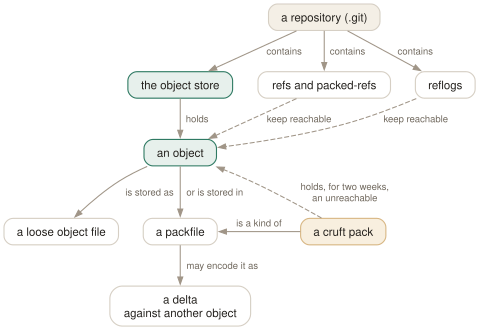

Day 20
Inside .git
Loose objects, packfiles, packed refs — and what garbage collection is actually allowed to collect.
By the end of today you can
- find your way around
.gitand say what each file and directory is for - watch loose objects become a packfile, and read the deltas inside one
- predict whether
git gcwill delete an unreachable object today, in two weeks, or never
A directory you can read
Everything from Day 1 onwards has been operations on a directory, and today you open it. .git is a handful of small text files that say where you are, an object store that only grows, and a housekeeper — git gc — whose rules decide when anything is ever thrown away. Knowing those rules is what makes the safety net of Day 11 something you can reason about instead of hope for.
$ ls .git
COMMIT_EDITMSG config description HEAD hooks index info logs objects refs
HEAD- The symbolic ref naming your current branch (Day 3).
config- This repository's config — the
--locallayer of Day 12. index- The binary staging area of Day 2. Replaced on every
git add. objects/- The store: loose objects in two-hex-digit directories, packs in
objects/pack/, the commit-graph inobjects/info/. refs/- Branches, remote-tracking branches and tags, one file each — until they are packed.
packed-refs- Many refs in one text file. Written by
git gcandgit pack-refs. logs/- The reflogs of Day 11, one file per ref.
hooks/- Day 18.
info/excludeis Day 14's per-clone ignore file.

cat-file returns the same bytes. What gc may delete depends only on reachability and age — the amber box is where unreachable objects wait out their two weeks.Loose, then packed
A new object is written as its own zlib-compressed file, objects/ce/013625…. That is fast to write and wasteful to keep. git gc — which many commands run for you as gc --auto once more than gc.auto (6700) loose objects accumulate — gathers them into a packfile. Here is a 20000-line file and five one-line edits to it:
$ git count-objects -vH
count: 18
size: 312.00 KiB
in-pack: 0
packs: 0
$ git gc -q && git count-objects -vH
count: 0
in-pack: 18
packs: 1
size-pack: 45.66 KiB
$ ls .git/objects/pack
pack-a6902c03….idx pack-a6902c03….pack pack-a6902c03….rev
Three hundred kilobytes became forty-five. Inside the pack, git verify-pack -v shows each object's real size, packed size, and — for deltas — depth and base object:
$ git verify-pack -v .git/objects/pack/*.idx | grep blob
1f528f6… blob 108919 43832 855
30c3889… blob 23 36 44778 1 1f528f6…
d327c9b… blob 33 45 44814 2 30c3889…
7599e0c… blob 33 45 44859 3 d327c9b…
c26350d… blob 23 36 44950 3 d327c9b…
897cb86… blob 23 36 45078 2 30c3889…
Match those against git log --raw: 1f528f6 is the newest version, stored whole. 7599e0c, the original file from the first commit, is a 33-byte delta three steps away, based on the second edit. Deltas point backwards from the present and are chosen for size, not history order.
What gc is allowed to delete
gc deletes an object only if it is unreachable — no ref, no reflog entry, no index entry leads to it — and older than gc.pruneExpire, which defaults to two weeks. Watch a dropped commit go through each stage:
$ git commit -qm 'Oops' && S=$(git rev-parse HEAD:s.txt)
$ git reset -q --hard HEAD~1 && git gc -q && git cat-file -t $S
blob # still reachable from the reflog
$ git reflog expire --expire=now --all && git gc -q && git cat-file -t $S
blob # unreachable, but inside its two weeks
$ git gc -q --prune=now && git cat-file -t $S
fatal: git cat-file: could not get object info
Between the second and third step the object was neither loose nor in the main pack. With gc.cruftPacks at its default of true, gc moves unreachable objects into a separate cruft pack, with a .mtimes file recording each object's age, so that the grace period survives repacking without scattering thousands of loose files.
git fsck is the inverse check: it verifies every object's hash and every link, and with --unreachable lists what gc would consider garbage. It exits 0 on a healthy repository and says nothing.
Maintenance, bare repositories, and pointing git elsewhere
git maintenance is gc's scheduled successor. git maintenance run --task=commit-graph writes objects/info/commit-graph, a cache that makes log --graph and reachability queries fast on big histories. git maintenance start registers the repository in your global config (maintenance.repo) and installs an hourly scheduler entry; it touches your user's systemd or cron, so run it knowing that, and undo it with git maintenance stop.
A bare repository is the contents of .git with no working tree — core.bare = true, and git status says “this operation must be run in a work tree”. Every repository you push to is one. The global options --git-dir and --work-tree (or GIT_DIR and GIT_WORK_TREE) pair any repository with any directory, which is the whole trick behind keeping dotfiles in git:
$ git init --bare -b main ~/.dotfiles
$ alias dot='git --git-dir=$HOME/.dotfiles --work-tree=$HOME'
$ dot config status.showUntrackedFiles no
$ dot add ~/.bashrc && dot commit -qm 'Track bashrc'
$ dot status
On branch main
nothing to commit (use -u to show untracked files)
Today's habit
Leave git gc to git; it runs when it needs to. What changes is how you think about “deleted”: an object is gone only when nothing reaches it and two weeks have passed. Until then, Day 11's reflog and fsck --unreachable can find it.
Tomorrow: the sharp edges — tracing, untrusted repositories, and where to read after this course.
New vocabulary
Commands
| Command | Does |
|---|---|
git count-objects -vH | Count loose and packed objects, with human-readable sizes. |
git gc | Pack loose objects, pack refs, expire reflogs, prune old unreachable objects. |
git gc --prune=now | Also delete unreachable objects at once, ignoring the two-week grace period. |
git verify-pack -v <pack>.idx | List every object in a pack: size, packed size, delta depth and base. |
git fsck | Check every object's hash and every link between objects. |
git maintenance run --task=<task> | Run one maintenance task now: gc, commit-graph, prefetch, loose-objects, incremental-repack… |
git maintenance start | Register this repository and install an hourly background schedule. |
git init --bare | Create a repository with no working tree — the shape of every server-side repository. |
Options
| Option | Does |
|---|---|
gc.pruneExpire | How old an unreachable object must be before gc deletes it. Default 2.weeks.ago. |
gc.cruftPacks | Keep unreachable objects in a cruft pack rather than loose. Default true. |
gc.auto | Loose-object count above which git gc --auto packs. Default 6700. |
--git-dir / --work-tree | Point git at a repository and a working tree explicitly; turns off discovery. |
Drillsdo these in a real terminal, today
Self-check
Answer out loud first, then unfold.
You committed a secret, reset it away, and ran git gc. git cat-file -p <hash> still prints it. Name the two things protecting it.
First, the reflog: HEAD@{1} still names the commit, so it is reachable and gc keeps it (Day 11). Second, the grace period: even once unreachable, an object is kept until it is older than gc.pruneExpire, two weeks by default. In 2.52 it waits in a cruft pack (the one with a .mtimes file), not as a loose file.
git reflog expire --expire=now --all && git gc --prune=now removes it locally. It does nothing for clones that already have it; a pushed secret is rotated, not deleted.
Day 1 said git stores snapshots, not diffs. git verify-pack -v shows most of your file's versions stored as deltas. Was Day 1 wrong?
No. Deltas are how a packfile compresses objects, below the object model: ask for any blob and you get the full contents, however it is stored. The deltas are chosen for size, not along history.
The experiment in this lesson shows it plainly: the newest version of the file is stored whole, and the original version is a delta of depth 3 based on the second edit. Recent objects are the ones you read most, so they are the cheap ones to reach.
A teammate runs git maintenance start once and later finds a setting in their ~/.gitconfig they did not write. What was it, and where else did the command write?
start does what register does — adds the repository to the global maintenance.repo list — and then installs a scheduler entry (systemd timers, cron or launchd, depending on the platform) that runs git maintenance run --scheduled hourly for every registered repository. git maintenance stop removes the schedule; unregister removes the repository from the list.
Your dotfiles live in a bare repository used as git --git-dir=~/.dotfiles --work-tree=~. You forget the options once and run git status in ~/src/project. What happens, and why is that the safe failure?
Without --git-dir, git discovers repositories by walking up from the current directory, so you get ~/src/project's status as usual. The bare repository is invisible unless named: it has no .git directory for discovery to find. The dangerous mistake is the opposite one — naming --git-dir without --work-tree, which makes git treat the current directory as the top of the working tree.
Cheat sheet
# .git: HEAD config index objects/ refs/ packed-refs logs/ hooks/ info/
git count-objects -vH # loose vs packed, sizes
git gc # pack, pack refs, expire, prune >2 weeks
git gc --prune=now # and prune unreachable now
git verify-pack -v PACK.idx # size, packed, depth, base
git fsck [--unreachable] # integrity; what gc would drop
git maintenance run --task=commit-graph
# deleted = unreachable AND older than gc.pruneExpire (2.weeks.ago)
git --git-dir=X --work-tree=Y ... # always both, or use -C
Everything through Day 20
Commands
| Command | Does |
|---|---|
git init -b main | Create an empty repository whose first branch is main. |
git hash-object <file> | Print the object name the file's contents would get. Writes nothing without -w. |
git cat-file -t <object> | Print an object's type: blob, tree, commit or tag. |
git cat-file -p <object> | Pretty-print an object's contents. The one command that shows what git really stores. |
git cat-file -s <object> | Print an object's size in bytes. |
git ls-tree -r <tree-ish> | List every blob in a tree, recursively, with mode and hash. |
git rev-parse HEAD | Turn a name into the full hash it currently means. |
git count-objects -v | Count loose and packed objects and the disk they use. |
git status -s | Show each changed path with two columns: index vs HEAD, then working tree vs index. |
git add <path> | Copy the file's current contents into the index. Writes the blob immediately. |
git add -p | Walk through each hunk and choose which ones go into the index. |
git diff | Show what differs between the index and the working tree — what add would stage. |
git diff --staged | Show what differs between HEAD and the index — what commit would record. |
git restore <path> | Overwrite the working-tree file with the index version. Discards unstaged edits. |
git restore --staged <path> | Reset the index entry to HEAD's version. The working tree is untouched. |
git commit [-a] | Turn the index into a tree, wrap it in a commit, move the branch to it. -a first stages every modified tracked file (never untracked ones). |
git rm --cached <path> | Remove a path from the index only; the file stays on disk, now untracked. |
git branch | List local branches; * marks the one HEAD names. |
git branch -v | List branches with the commit each points at and its subject line. |
git branch <name> | Create a branch at HEAD without switching to it. |
git switch <branch> | Point HEAD at a branch and update the index and working tree to its commit. |
git switch -c <name> | Create a branch at HEAD and switch to it in one step. |
git switch - | Switch back to the branch you were on before. |
git switch --detach <commit> | Point HEAD directly at a commit, with no branch in between. |
git branch -d <name> | Delete a branch, refusing unless it is merged into its upstream (or into HEAD, if it has none). |
git branch -D <name> | Delete a branch unconditionally. |
git branch -m <old> <new> | Rename a branch. |
git merge <branch> | Bring the branch's history into the current one: fast-forward if possible, else a merge commit. |
git merge --ff-only <branch> | Merge only if it is a fast-forward; otherwise refuse and change nothing. |
git merge --no-ff <branch> | Always create a merge commit, even when a fast-forward was possible. |
git merge --abort | Give up a conflicted merge and restore the state before it started. |
git merge-base A B | Print the best common ancestor of two commits — the version a merge compares against. |
git ls-files -u | List the unmerged index entries: one line per stage per conflicted path. |
git show :1:<path> | Show the base version of a conflicted file. :2: is yours, :3: theirs. |
git checkout --conflict=merge <path> | Recreate the conflict markers in a file you mangled; =zdiff3 works too. |
git clone <url> | Copy a repository: all objects, its branches as origin/*, and one local branch checked out. |
git remote -v | List remotes with their fetch and push URLs. |
git remote add <name> <url> | Register another repository under a short name. |
git fetch | Download new objects and move the remote-tracking refs. Never touches your branches or files. |
git pull | Fetch, then integrate the upstream into the current branch. |
git push | Send the current branch's commits and move the branch of the same name on the remote. |
git push -u origin <branch> | Push and record origin/<branch> as this branch's upstream. |
git push origin --delete <branch> | Delete a branch on the remote. |
git branch -vv | List branches with their upstream and ahead/behind counts. |
git log --oneline --graph --all | Draw every branch's history, one line per commit. |
git log -p | Show each commit's diff against its parent. |
git log --stat | Show which files each commit touched, and how much. |
git log --author=<re> --since=<date> | Keep only commits whose author matches, from a date onwards. |
git log -- <path> | Keep only commits that changed the path. The -- separates paths from revisions. |
git log --follow -- <file> | Follow one file's history back through renames. |
git log -S<string> | Pickaxe: keep commits that change how many times the string occurs. |
git log -G<regex> | Keep commits whose diff adds or removes a line matching the regex. |
git log -L :<func>:<file> | Show the history of one function (or -L 10,20:file for a line range). |
git show <commit> | Show one commit: message and diff. |
git blame -w -C <file> | Annotate each line with its last commit, ignoring whitespace and seeing moves between files. |
git rev-parse --verify <rev> | Resolve an expression to one object name, or fail. The checker for everything today. |
git rev-parse --abbrev-ref <rev> | Print the short ref name an expression means: @{u} becomes origin/main. |
git rev-parse --symbolic-full-name <rev> | Print the full ref name, e.g. refs/remotes/origin/main. |
git log A..B | List commits reachable from B but not from A: what B has that A lacks. |
git log --left-right A...B | List commits on either side but not both, marked < or >. |
git diff A...B | Diff from the merge base of A and B to B: what B changed since they split. |
git show <rev>:<path> | Print a file as it was in any commit, without checking anything out. |
git show :<path> | Print the version of a file currently staged in the index. |
git commit --amend | Replace the last commit with a new one built from the current index. Opens the editor. |
git commit --amend --no-edit | Amend, keeping the message: for the file you forgot to add. |
git reset --soft <rev> | Move the branch to rev. Index and working tree untouched. |
git reset <rev> | Move the branch and reset the index to it (--mixed, the default). Working tree untouched. |
git reset --hard <rev> | Move the branch, and overwrite index and working tree to match. Destroys uncommitted work. |
git reset -- <path> | Copy path from HEAD into the index: unstage. The branch does not move. |
git restore --source=<rev> <path> | Overwrite a working-tree file with its version from any commit. |
git revert <commit> | Make a new commit that undoes commit. The safe undo for published history. |
git clean -n | List the untracked files -f would delete. Add -d for directories, -x for ignored files. |
git clean -fd | Delete untracked files and directories. Ignored files survive unless -x. |
git rebase <upstream> | Replay the commits in <upstream>..HEAD on top of upstream. With no argument, uses @{u}. |
git rebase --onto <new> <old> [<branch>] | Replay <old>..<branch> on top of new: transplant part of a branch. |
git rebase --continue | After resolving and git adding a conflict, commit it and go on. |
git rebase --skip | Drop the commit that stopped, and go on. |
git rebase --abort | Put the branch back exactly where it was before the rebase started. |
git push --force-with-lease | Overwrite the remote branch only if it is still where your remote-tracking branch says. |
git push --force-if-includes | With the lease: also refuse if the remote tip was fetched but never integrated locally. |
git rebase -i <base> | Open the todo list for <base>..HEAD in your editor, then run it. |
git rebase --edit-todo | Re-open the remaining todo list while a rebase is stopped. |
git commit --fixup=<commit> | Commit the staged change as fixup! <subject>, to be melted into commit later. |
git commit --fixup=amend:<commit> | Like --fixup, but the squash also replaces the target's message. |
git rebase -i --autosquash <base> | Move every fixup!/squash!/amend! commit under its target and mark it. |
git rebase -x '<cmd>' <base> | Run cmd after every replayed commit; stop at the first failure. |
git range-diff <base> <old> <new> | Pair up the commits of two versions of a branch and show how each changed. |
git reflog | List where HEAD has pointed, newest first, as HEAD@{n} entries. Short for git reflog show HEAD. |
git reflog show <branch> | List where one branch has pointed. Its entries are <branch>@{n}. |
git reflog --date=iso | Show each entry's time instead of its index: main@{2026-09-25 09:00:00 +0200}. |
git log -g | Walk a reflog with the full git log formatting options. |
git reset --hard ORIG_HEAD | Undo the last reset, merge or rebase: go back to where it started. |
git branch <name> <commit> | Give a recovered commit a name again, so it is safe for good. |
git fsck --unreachable | List objects nothing refers to — not even a reflog. Where dropped stashes are found. |
git config list --show-origin --show-scope | List every setting in effect, with the file and scope it came from. |
git config get <name> | Print the value git will use. Exit status 1 if unset. |
git config set [--global] <name> <value> | Write a setting, to the repository's .git/config unless told otherwise. |
git config unset [--global] <name> | Remove a setting from one file. Exit status 5 if it was not there. |
git config edit --global | Open ~/.gitconfig in your editor. |
git -c <name>=<value> <cmd> | Override one setting for one command, above every file. |
git help <alias> | Print what an alias expands to. |
git stash push -m <msg> | Save staged and unstaged changes to tracked files as a stash entry, and clean the tree. |
git stash push -u | Include untracked files. -a also takes ignored ones. |
git stash push --staged | Stash only what is in the index. |
git stash list | List entries; stash@{0} is the newest. |
git stash show -p [stash@{n}] | Show an entry as a patch. Add --include-untracked to see its untracked files. |
git stash apply [--index] | Reapply an entry and keep it. --index restores what was staged as staged. |
git stash pop [--index] | Apply, and drop the entry only if it applied cleanly. |
git stash drop [stash@{n}] | Delete one entry. |
git stash branch <name> | Create a branch at the commit the stash was made on, apply it there, drop it. |
git worktree add <path> [-b <new>] [<branch>] | Check out a branch in a new directory that shares this repository. |
git worktree list | List every working tree with its HEAD and branch. |
git worktree remove <path> | Delete a clean worktree. git worktree prune forgets ones you deleted by hand. |
git check-ignore -v <path> | Print the file, line and pattern that decides whether path is ignored. |
git check-ignore -v --no-index <path> | The same for a path that is already tracked. |
git status --ignored | Also list ignored files, marked !!. |
git ls-files -o -i --exclude-standard | List every untracked file the ignore rules are hiding. |
git add -f <path> | Add a file despite an ignore rule. |
git check-attr -a -- <path> | Print every attribute set on a path. |
git ls-files --eol | Show line endings in the index and working tree, and the attribute in force. |
git add --renormalize . | Re-apply the current text/eol attributes to every tracked file in the index. |
git archive HEAD | Write a tarball of a commit, leaving out export-ignore paths. |
git cherry-pick -x <commit> | Apply one commit's change on top of HEAD as a new commit, noting the original in the message. |
git cherry-pick A..B | Pick every commit in the range, oldest first. A itself is excluded. |
git cherry-pick --continue | --skip | --abort | Resume after resolving, drop the current commit, or return to where you started. |
git log --cherry-mark --left-right A...B | Mark commits on each side with = when the other side has an equivalent patch. |
git tag -a v1.2 -m <msg> [<commit>] | Create an annotated tag: a tag object with tagger, date and message. |
git tag v1.2 [<commit>] | Create a lightweight tag: just a ref. |
git tag -l 'v1.*' | List tags matching a glob. |
git push origin <tag> | Publish one tag. Tags are not pushed with branches by default. |
git push origin --delete <tag> | Delete a tag on the remote. |
git describe [--tags] [--dirty] [--always] | Name HEAD relative to the nearest annotated tag, e.g. v1.1-1-gc6dcec7. |
git bisect start <bad> <good>... | Begin a search between a known-bad and one or more known-good commits. |
git bisect good | bad | Mark the checked-out commit, and move to the next midpoint. |
git bisect skip | This commit cannot be tested; pick a nearby one instead. |
git bisect run <cmd> [args] | Test every step automatically: exit 0 good, 1–127 bad, 125 skip, anything else abort. |
git bisect reset | End the session and return to the branch you started on. |
git bisect log | Print the session so far as a replayable script. |
git bisect replay <file> | Re-run a saved log, e.g. after correcting one wrong answer. |
git bisect view --oneline | List the commits still in the running. |
git bisect terms | Show the words in use for the two states. |
git merge -X ours <branch> | Merge normally, but settle each conflicting hunk in favour of this side. Clean hunks from the other side still land. |
git merge -s ours <branch> | Record a merge that keeps this tree exactly. The other branch's changes are discarded. |
git checkout --ours <path> | During a conflict, take stage 2 for that path. In a rebase, stage 2 is the upstream. |
git checkout --theirs <path> | Take stage 3 for that path. In a rebase, stage 3 is your own commit being replayed. |
git checkout -m <path> | Re-create the conflict markers in a file you have mangled or resolved wrongly. |
git log --merge | During a conflict, list only the commits on either side that touch the conflicted paths. |
git diff AUTO_MERGE | Show only what you have edited since git wrote the conflicted files. |
git rerere status | List paths whose conflict rerere has recorded a preimage for. |
git rerere diff | Show the resolution you are about to teach rerere. |
git rerere forget <path> | Drop a recorded resolution that turned out to be wrong. |
ls .git/hooks | See the sample hooks git init installed. None of them runs: they end in .sample. |
chmod +x .git/hooks/pre-commit | Enable a hook. A hook without the executable bit is ignored, with a hint. |
git commit --no-verify | Skip the pre-commit and commit-msg hooks for this commit. prepare-commit-msg still runs. |
git push --no-verify | Skip the pre-push hook for this push. |
git hook run <name> | Run a hook by hand, exactly as git would find it. Fails if it does not exist. |
git hook run --ignore-missing <name> | Run it if it exists; succeed quietly if not. For scripts. |
git rev-parse --show-toplevel | Print the root of the working tree. The first line of most scripts. |
git rev-parse --git-dir | Print where the repository is — .git, or somewhere else entirely. |
git rev-parse --is-inside-work-tree | Print true, or fail with status 128 outside a repository. |
git for-each-ref --format=… refs/heads/ | Print one formatted line per ref: the scriptable git branch. |
git status --porcelain=v2 --branch -z | Machine-readable status, NUL-terminated, with branch and ahead/behind headers. |
git log --format=… | Print commits through a template of %H, %an, %ad, %s and friends. |
git ls-files -z | List tracked paths raw, NUL-terminated, without C-quoting. |
git cat-file --batch-check | Read object names on stdin; print hash, type and size for each. One process for thousands of objects. |
git var GIT_EDITOR | Print the editor git would actually launch, after all the fallbacks. |
git count-objects -vH | Count loose and packed objects, with human-readable sizes. |
git gc | Pack loose objects, pack refs, expire reflogs, prune old unreachable objects. |
git gc --prune=now | Also delete unreachable objects at once, ignoring the two-week grace period. |
git verify-pack -v <pack>.idx | List every object in a pack: size, packed size, delta depth and base. |
git fsck | Check every object's hash and every link between objects. |
git maintenance run --task=<task> | Run one maintenance task now: gc, commit-graph, prefetch, loose-objects, incremental-repack… |
git maintenance start | Register this repository and install an hourly background schedule. |
git init --bare | Create a repository with no working tree — the shape of every server-side repository. |
Options
| Option | Does |
|---|---|
user.name / user.email | Set the identity written into every commit's author and committer lines. |
init.defaultBranch | Name the first branch of every new repository. |
commit.verbose | Show the staged diff below the message in the commit editor. |
branch.sort | Set the default order of git branch; -committerdate puts recent work first. |
merge.conflictStyle | Choose the marker style: merge (default), diff3 or zdiff3. |
pull.ff | only: let git pull fast-forward and refuse anything else. |
push.autoSetupRemote | Make a plain git push of a new branch create it upstream and track it. |
fetch.prune | Delete remote-tracking refs whose branch was deleted on the remote, on every fetch. |
diff.colorMoved / diff.colorMovedWS | Colour moved blocks differently from added and removed ones; allow-indentation-change still recognises a re-indented move. |
push.useForceIfIncludes | Make every --force-with-lease behave as if --force-if-includes were given. |
rebase.autoSquash | Make rebase -i autosquash by default. Interactive mode only. |
rebase.updateRefs | Also move any branch that points into the rebased range (--update-refs). |
gc.reflogExpire | Age after which reflog entries are pruned. Default 90 days. |
gc.reflogExpireUnreachable | Same, for entries no longer reachable from the ref's tip. Default 30 days. |
core.logAllRefUpdates | Whether reflogs are kept. True by default with a working tree, false in a bare repository. |
includeIf."gitdir:<dir>/".path | Read another config file only for repositories under dir. |
alias.<name> | Define git <name>. A leading ! makes it a shell command. |
GIT_CONFIG_GLOBAL | Read this file instead of ~/.gitconfig; /dev/null for none. |
GIT_PREFIX | Set for shell aliases: the directory you ran them from, relative to the top level. |
core.excludesFile | Your personal ignore file. Defaults to ~/.config/git/ignore — usually leave it. |
diff.<driver>.textconv | A program that turns a file into text for diffs, used by paths with diff=driver. |
tag.sort | Default ordering for git tag -l; version:refname sorts v1.10 after v1.9. |
push.followTags | Also push annotated tags that point into the history being pushed. |
--first-parent | On bisect start: follow only first parents, so merged side branches count as one step. |
--term-old=<w> --term-new=<w> | On bisect start: use your own words instead of good/bad. |
rerere.enabled | Record every conflict and its resolution, and replay them on the next identical conflict. |
rerere.autoUpdate | Stage a path once rerere has resolved it, instead of leaving it for you to git add. |
core.hooksPath | Look for hooks in this directory instead of $GIT_DIR/hooks. Replaces it; does not add to it. |
GIT_INDEX_FILE | Set for a pre-commit hook: the index being committed. Unset it before running git in another repository. |
-C <path> | Run as if started in <path>. Global option: goes before the subcommand. |
--no-pager / -P | Never pipe through the pager, even on a terminal. |
:(exclude)… / :!… | Pathspec magic: everything except the matching paths. |
gc.pruneExpire | How old an unreachable object must be before gc deletes it. Default 2.weeks.ago. |
gc.cruftPacks | Keep unreachable objects in a cruft pack rather than loose. Default true. |
gc.auto | Loose-object count above which git gc --auto packs. Default 6700. |
--git-dir / --work-tree | Point git at a repository and a working tree explicitly; turns off discovery. |